Trade Idea Generation – Quantitative Processing 1
The bottom-up, fundamentals-first process for GENERATING long/short ideas over a 20-60 day horizon — and the one metric it always starts with: the forward P/E ratio, correctly understood (price is a quality signal, not a cheap/expensive verdict).
Idea generation is an identification process weighted ~80-90% to fundamentals (quantitative + qualitative) and ~10-20% to timing, over 20-60 days. Having set portfolio Vol/Correlation/Bias, you funnel GDP -> Market -> Sector -> Stocks and hunt sector OUTLIERS bottom-up, and the first quantitative metric is always the 1-year FORWARD P/E (= Market Cap / After-Tax Earnings = Stock Price / EPS). Read relatively vs sector peers, P/E signals what the market pays a PREMIUM for (quality/growth) and sells at a DISCOUNT — never 'cheap' or 'expensive'. A stock can ride the same 10x multiple to zero or to the moon, so let the market pre-sort the quality from the trash before you do deeper qualitative work.
The gist
- Split all trading knowledge into fixed info you learn ONCE (what a yield curve or P/E is) vs continuous PROCESSES you engage in regularly (weekly rate reads, monthly ISM, portfolio modelling, idea generation). 'You have to show up and do your processes.'
- The Pro-Trader systematic process for a 20-60 day L/S book: Fundamentals (~80-90%, MOST IMPORTANT, split Quantitative + Qualitative) -> Timing (~10-20%, technicals, only basics required) -> Trade Structure (catalysts) -> Risk Management (live portfolio, stay in motion).
- Trade Ideas beat Risk Management: Reckless Genius = ideas 8/10 + variability 2/10; Firefighter = 2/10 + 8/10; Useless Pleb = 1/10 + 3/10 (4/20); Winner = 7/10 + 7/10 (14/20). Good ideas + bad risk management is NOT the same as bad ideas + good risk management.
- Bottom-up 'Micro Views' has four steps: Identify Outliers (Quantitative), then Learn Stock Info / Identify KPIs / Identify Catalysts (all Qualitative). You funnel GDP -> Market+/- -> Sector -> Stocks and hunt positive AND negative sector outliers to build an inventory of potential ideas.
- P/E = Market Cap / After-Tax Earnings = Stock Price / EPS, and the pro measure is the 1-year FORWARD P/E (today's price / consensus mean analyst FY1 EPS) — TTM/lagging P/E is rejected. Read it relative to sector peers: it asks 'how much will the world PAY for (or SELL) a company's forward earnings?'
- Price is a QUALITY signal, not a cheap/expensive verdict. A stock can ride the same 10x multiple all the way down ($10 EPS $1.00 -> $9/$6.50/$0.10 as EPS falls $0.90/$0.65/$0.01) or all the way up ($12/$20/$40 as EPS rises $1.20/$2.00/$4.00) — so 'cheap' and 'expensive' are the two biggest curse words a pro can utter. Let the market pre-sort quality from trash.
Two kinds of knowledge: learn-once vs do-forever
- Everything in the PTM series splits into two: FIXED information you learn once and it never changes (what a yield curve is, what a P/E means), vs continuous PROCESSES you must engage in regularly.
- Learn-once examples: what the yield curve / ISM Manufacturing & Non-Manufacturing ROB / portfolio volatility / correlation / beta ARE and how they're designed.
- Do-forever processes: knowing weekly where rates sit and what they mean for GDP, equities and portfolio bias; interpreting ISM monthly for your macro view and sector trends; modelling your portfolio's Vol, Correlation, Bias and Beta; and generating trade ideas.
- Retail traders 'do everything the wrong way around and upside down' — nowhere more than in forming trade ideas.
The mental model that frames the whole idea-generation block: definitions are done once, but interpretation and idea generation are recurring work you have to show up for.
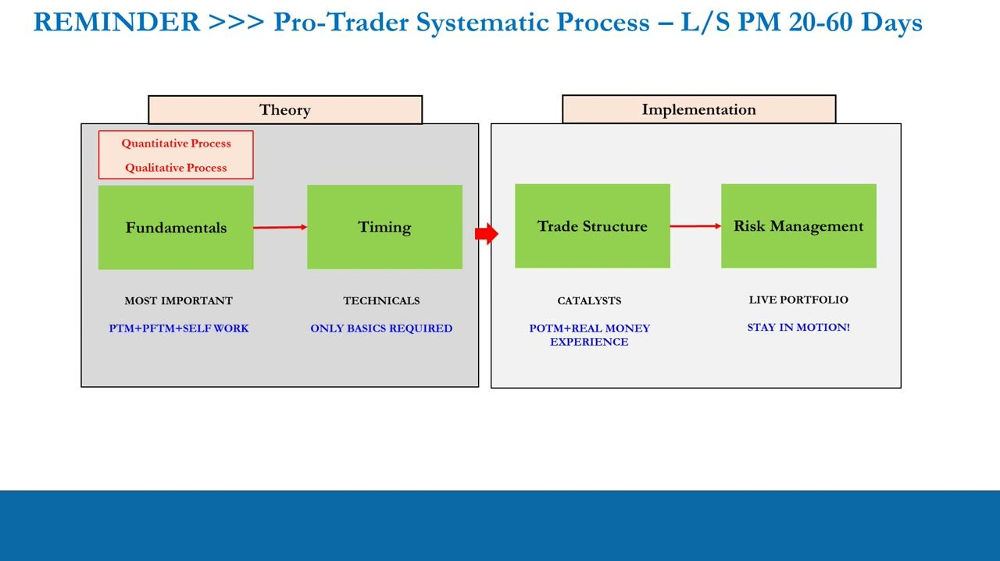
The Pro-Trader systematic process (20-60 day L/S)
- Time horizon: L/S portfolio management lives in the ~20-60 day window (the volatility & learning sweet spot on the days timeline 1/5/20/60/120/250/750/1250) — between short-term traders/algos (days 1-5) and value/income investors (~day 250).
- Theory -> Implementation. THEORY: Fundamentals (MOST IMPORTANT — PTM+PFTM+self work) then Timing (technicals, ONLY BASICS REQUIRED). IMPLEMENTATION: Trade Structure (catalysts) then Risk Management (live portfolio — STAY IN MOTION).
- Fundamentals carry ~80-90% of the weight in deciding long vs short; timing ~10-20%. Fundamentals itself splits into a Quantitative Process and a Qualitative Process.
- Bottom-up 'Micro Views' = four steps: Identify Outliers (Quantitative); then Learn Stock Info, Identify KPIs, Identify Catalysts (all Qualitative).
Fundamentals dominate; timing and technicals are a light overlay. The quantitative pass this lesson covers is only the first, outlier-identification step.
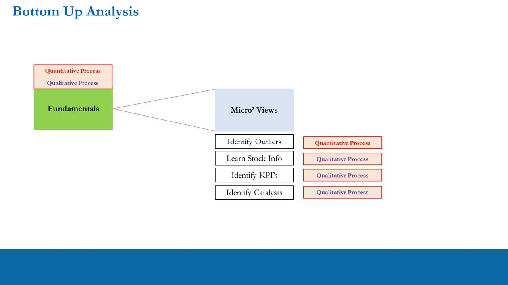
Trade Ideas vs Risk Management
- Who would you rather be? Good ideas + bad risk management is NOT the same as bad ideas + good risk management.
- Reckless Genius: ideas 8/10, 'black box' variability 2/10 -> 10/20, 12/20.
- Firefighter: ideas 2/10, variability 8/10 -> 10/20, 6/20.
- Useless Pleb: ideas 1/10, variability 3/10 -> 4/20.
- Winner!: ideas 7/10, variability 7/10 -> 14/20.
- The lesson: a constant stream of high-quality IDEAS is the oxygen of the book — without it, at best you're a firefighting trader.
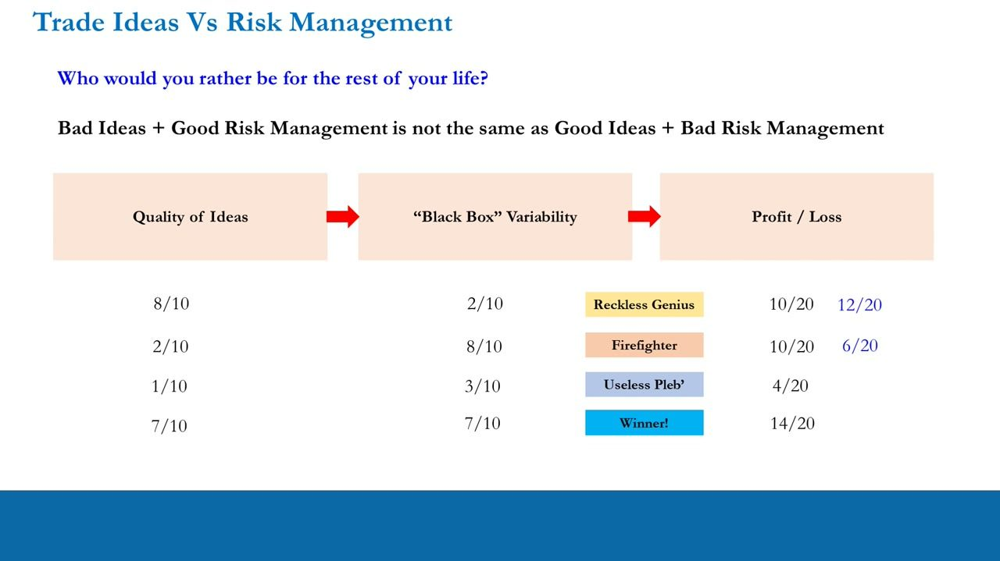
Recall — GDP -> Market -> Sector -> Stocks, then hunt outliers
- The decision tree runs GDP -> Market+ (long branch) / Market- (short branch) -> Sector++ or +/- (etc.) -> individual Stocks (+++, ++-, ... ---).
- A net-long, long-cyclicals tilt still means being long the RIGHT cyclicals for that moment; you can also short bad cyclicals and/or bad defensives while being long good defensives — there is no rule book.
- The goal, plainly: be long stocks that go up a lot and short stocks that go down a lot, with the right portfolio Vol, Correlation & Bias.
- Assuming Vol/Correlation/Bias are already in place, you first identify companies with GOOD fundamentals (potential longs) and BAD fundamentals (potential shorts), find the positive and negative outliers in each sector, and run an inventory of potential ideas.
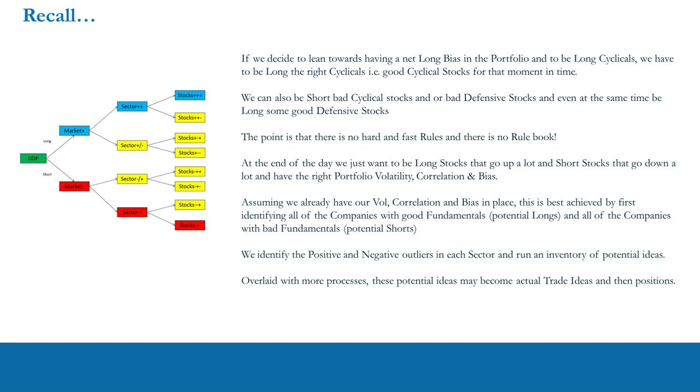
The P/E ratio — the first quantitative metric
- When engaging the bottom-up process, the FIRST metric you always go to is the Price / Earnings ratio.
- P/E is a statement of how the world currently values a company RELATIVE to its sector-classification peers.
- Formula: P/E ratio = Market Cap / After-Tax Earnings; equivalently = Stock Price / Earnings per Share (EPS).
- It is one of the most misunderstood metrics in finance — pretty much all retail traders (and even many pros and value investors) totally misunderstand what a P/E really measures.
A negative EPS (a loss-making company) over a positive price produces a negative P/E — so a loss shows as a negative multiple, not a low one.
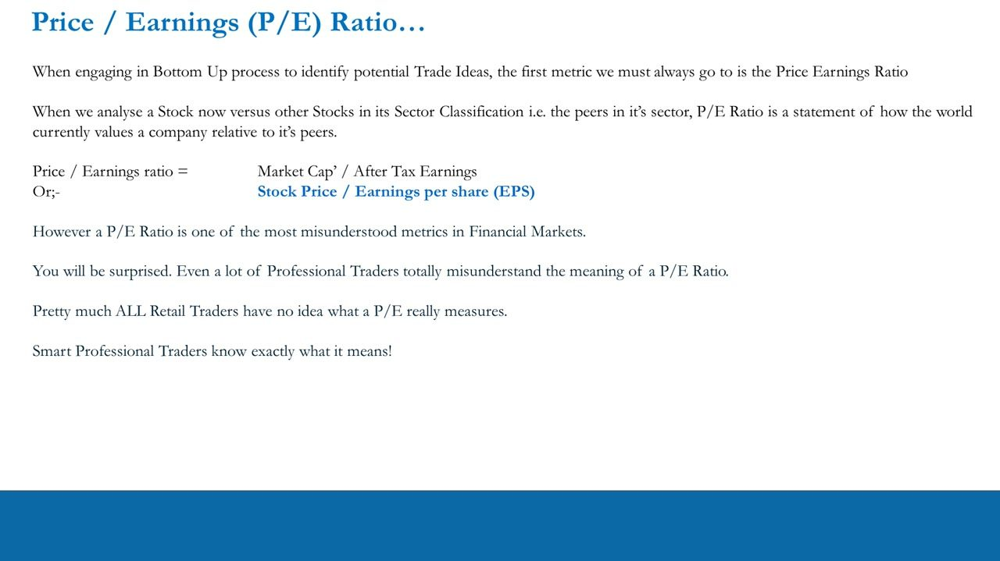
Interpreting P/E correctly — forward, not trailing
- WRONG (amateur / retail / bad-pro / value-investor) reading: 'low P/E = cheap, high P/E = expensive.'
- RIGHT (pro) framing, as a question: 'How much is the world prepared to PAY for a company's forward earnings?' — and equivalently 'how much is the world prepared to SELL a company's forward earnings for?' Both hold because a live market has buyers and sellers at every price.
- The most common pro measure is the 1-year FORWARD P/E = today's stock price / the consensus mean analyst EPS for the forward year.
- Which year is 'forward' depends on where you stand: in March 2023 the number is the 2023 consensus; in November 2021 it is the 2022 consensus.
- We do NOT care about the 1-year lagging / trailing-twelve-month (TTM) P/E — 'We are Traders. We look forwards!' In practice you also see FY1 / FY2 / FY3 forward P/E columns side by side.
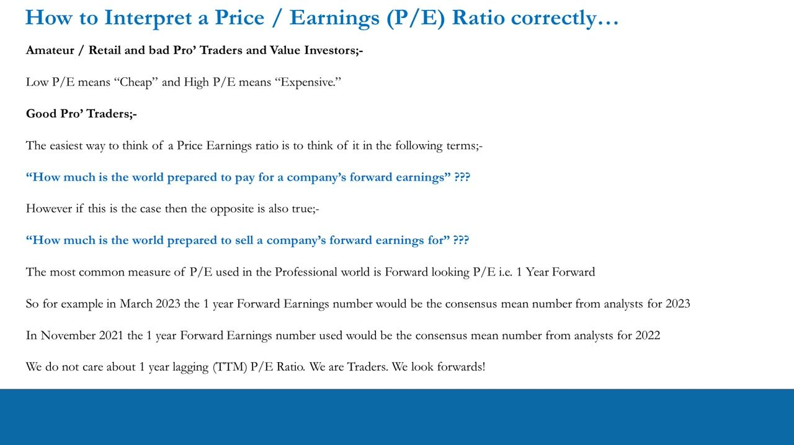
The 10x P/E drill — a multiple can hold forever, down OR up
- Setup: a stock at $10.00 with a 1-year forward EPS estimate of $1.00 -> P/E = 10x. To MAINTAIN 10x, the price is simply EPS x 10.
- Stock DOWN (EPS revised down): Feb supply-chain problems -> EPS $0.90 -> price $9.00; Mar material change -> EPS $0.65 -> price $6.50; May loses three key customer contracts -> EPS $0.01 -> price $0.10. EPS and price both fall ~99% on the SAME 10x multiple — a 'cheap' low-P/E stock can stay cheap all the way to zero.
- Stock UP (EPS revised up): Feb efficiency gains -> EPS $1.20 -> price $12; Mar material change (last 6 weeks) -> EPS $2.00 -> price $20; May surprise upturn in Peripheral European operations -> EPS $4.00 -> price $40. The 'expensive' stock rides the same 10x from $10 to $40 — short it at $10 and you're down $30/share by May.
- Takeaway: calling a stock 'cheap' or 'expensive' are two of the biggest curse words a pro can make; shorting 'expensive' can be even more dangerous than buying 'cheap'.
Learn it once, then it's done: for a falling stock price can drop to any level and stay on the same P/E; for a rising stock it can run to any level on the same P/E. The multiple alone tells you nothing about direction.
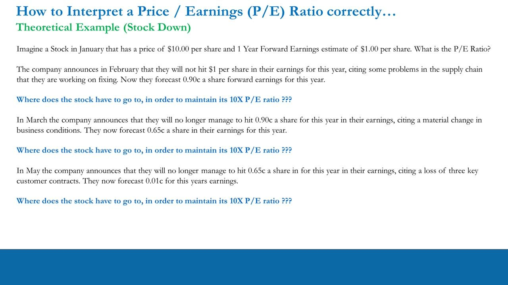
The lingerie analogy — price is a quality signal
- It's 6pm on Valentine's Day, the store is sold out except three items: Lingerie A = $50.00, B = $150.00, C = $500.00. You must buy one, now.
- Pick A = the 'cheap' option; pick C = the 'expensive' option; pick B = the middle-of-the-road / sensible option.
- The key: PRICE IS A SIGNAL OF QUALITY, no matter what we buy — which is exactly why a high or low relative P/E signals what the market thinks of a company's quality, not simply whether it's dear.
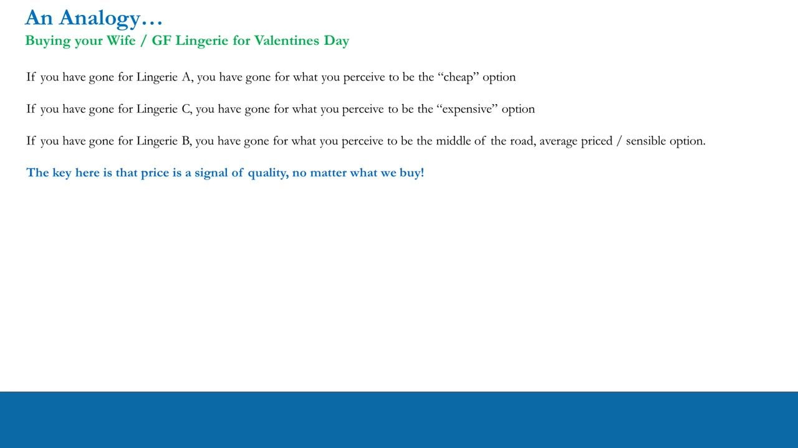
Two market truths to assume
- When analysing relative P/E ratios you must ALWAYS assume: 'There is nothing you know that the market doesn't already know.'
- And: 'The market can stay irrational longer than you can stay solvent.'
- Together these mean the market knowingly pays a premium or applies a discount for a reason — don't assume you've spotted a mispricing it has missed.
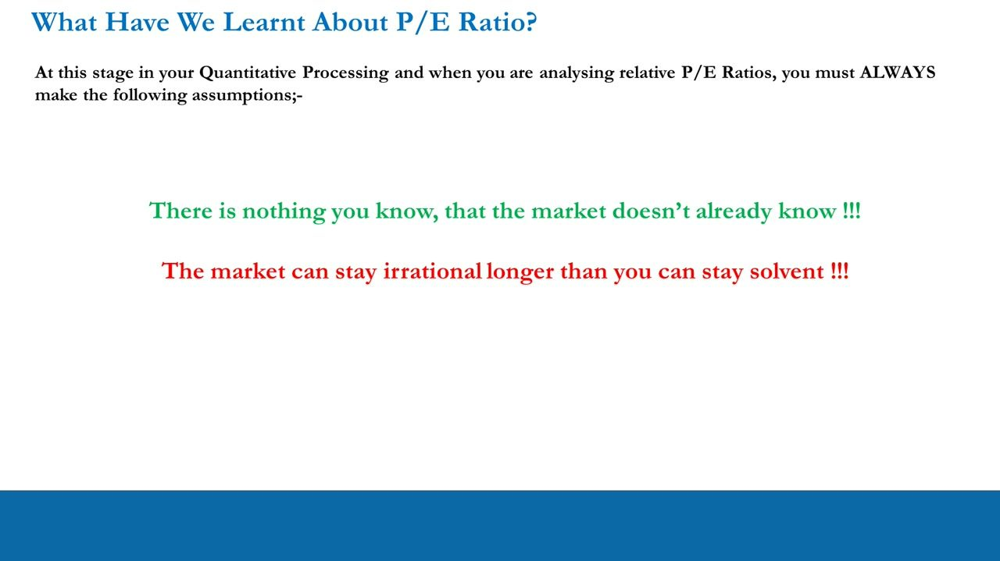
P/E example — a real sector table of outliers
- A Q1 2021 snapshot of the Food Services & Drinking Places sub-sector, ranked by PE FY1 (with PE FY2 / PE FY3 columns): Wingstop (WING) 99.60 / 74.94 / 60.65, mkt cap $3.79bn — the highlighted high outlier; McDonald's (MCD) 25.11 / 23.04 / 20.99, mkt cap $157.74bn — the highlighted low outlier.
- Other reference points: Chipotle 63.80, Cheesecake Factory 51.44, Darden 43.05, Starbucks 37.75, Domino's 27.83, Yum! Brands 26.20; and NEGATIVE FY1 outliers Arcos Dorados -7.00, Dave & Buster's -9.35, BJ's Restaurants -130.23, Aramark -131.35 (loss-makers).
- Identifying outliers = look for the high AND low (including negative) P/E stocks. WING is on ~100x 2021 earnings; MCD on ~25x — a huge relative gap worth investigating.
- You then run a simple backtest to see how these outliers actually played out from the 2020 COVID lows.
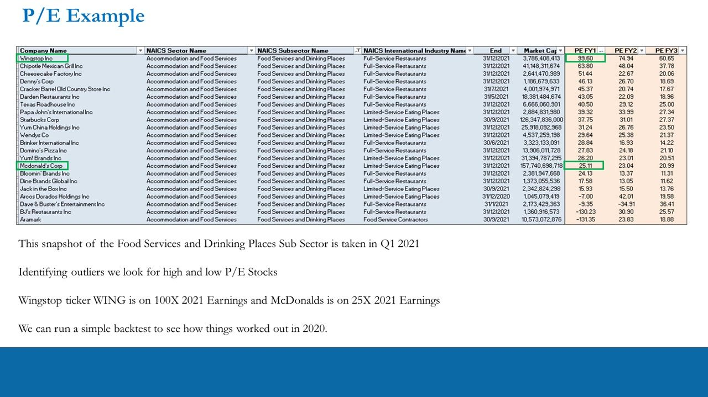
The COVID-low backtest — WING vs MCD
- Set the clock to March 23rd 2020 — the COVID lows, S&P 500 bottoming near 2191.86 (high 02/19/20 3393.52) with everything getting clobbered.
- Both stocks are rebased to 100 at 03/23/2020 on a Bloomberg spread chart (Buy WING / Sell MCD). Over 03/23-06/15/2020 WING rises to +91.43% (191.4277) and MCD to +38.21% (138.213).
- Worked figures: WING $62.76 -> $120.14 = {($120.14 - $62.76)/$62.76} x 100 = 91.42%; MCD $137.10 -> $189.49 = {($189.49 - $137.10)/$137.10} x 100 = 38.21%. WING outperformed MCD by 91.42% - 38.21% = 53.21% over a ~60 trading-day period.
- P/E differential (WING P/E / MCD P/E x 100): 23 Mar 75.61/16.72 = 4.52 -> 452% premium; 15 Jun 115/33 = 3.48 -> 358% premium; Q1 2021 99.60/25.11 = 3.96 -> 396% premium. The premium held in a ~350-450% 'gate' straight through a bear-to-bull reversal.
- Portfolio math: $10k each in a $100k book on 23 Mar -> ~160 WING shares (~$9,180.80 profit) vs ~73 MCD shares (~$3,824.47 profit) -> ~$5,360 / ~5.3% outperformance.
March-23 forward P/Es: WING $62.76 / $0.83 EPS = 75.61; MCD $137.10 / $8.20 EPS = 16.72. By 15 Jun: WING $120.14 / $1.04 = ~115; MCD $189.49 / $5.64 (revised DOWN) = ~33. The stock price moved first; EPS estimates caught up later.
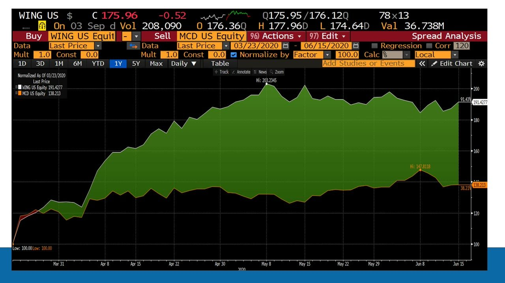
P/E as a guide — why the premium existed
- In the vast majority of cases in equity markets, money chases REVENUE and EARNINGS growth.
- WING is a chicken-wing franchise business in its revenue/earnings growth phase with high-% delivery-to-door — its EPS wasn't hit by COVID lockdowns; MCD is well past its growth phase, a mature fast-food business with a real-estate portfolio.
- Always ask: 'There must be a reason why this positive outlier trades at a PREMIUM to the sector average, and a reason why this negative outlier trades at a DISCOUNT.'
- P/E is your GUIDE to what the market will pay for and sell on a relative basis — a starting point, not a trade. It's then up to you to do further quantitative and qualitative work before it becomes a potential idea.
- Note: MCD was never called an outright short — you'd rather short stocks that FALL, and being long MCD (+38%) merely matched being long the S&P 500 with more risk. These are EXAMPLES, not trade recommendations — don't anchor, copy, or hindsight-trade them.
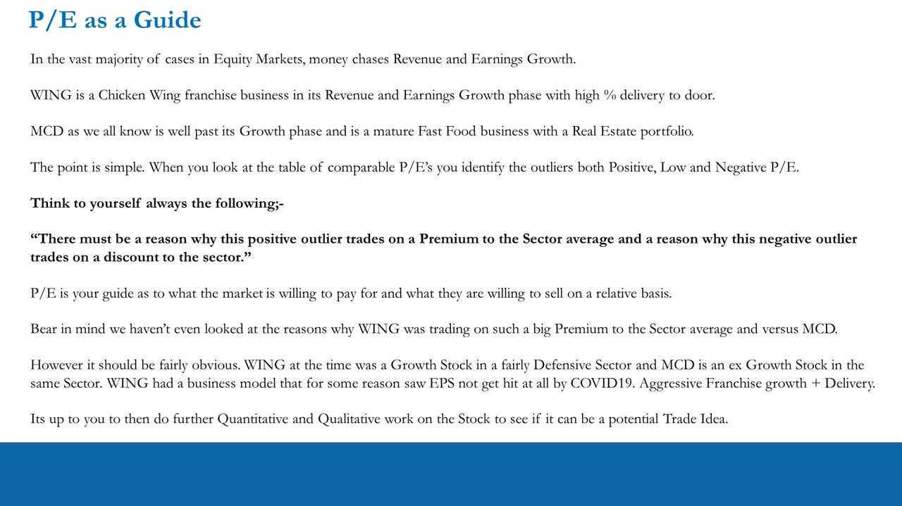
Summary — let the market pre-sort quality from trash
- Trade-idea generation is, without question, the most important ongoing responsibility of a consistently profitable trader — the oxygen of the book.
- Ideally: long stocks that go up a lot, short stocks that go down a lot, with the right portfolio Vol, Correlation & Bias. With those in place, first identify all companies with good fundamentals (potential longs) and bad fundamentals (potential shorts).
- Identify positive and negative outliers in each sector and build an inventory of potential ideas; the FIRST metric is the relative forward-looking P/E because it signals quality and what money likes and dislikes — you let the market identify the quality and the trash.
- This doesn't finish the work — it eliminates the uninteresting stocks unlikely to be a beneficiary or victim of extreme relative money flows. Learn P/E once; apply it continuously and correctly as your initial process forever.
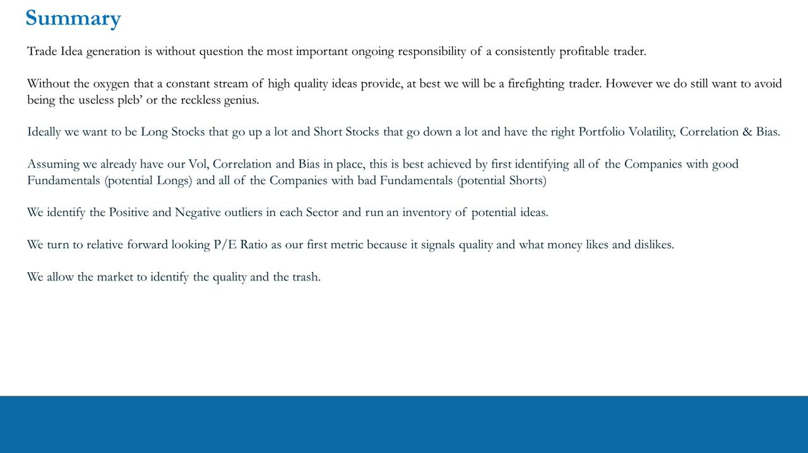
Glossary
- Fixed info vs continuous processThe core mental model: some knowledge is learned ONCE and never changes (what a yield curve or P/E is); the rest is a recurring PROCESS you must engage in (weekly rate reads, monthly ISM, portfolio modelling, idea generation). 'You have to show up and do your processes.'
- Pro-Trader systematic processTheory -> Implementation for a 20-60 day L/S book: Fundamentals (~80-90%, split Quantitative + Qualitative) -> Timing (~10-20%, basic technicals) -> Trade Structure (catalysts) -> Risk Management (live portfolio, stay in motion).
- Bottom-up Micro ViewsThe four-step stock-selection pass: Identify Outliers (Quantitative), then Learn Stock Info, Identify KPIs, Identify Catalysts (all Qualitative). Fed by the GDP -> Market -> Sector -> Stocks funnel.
- Trade Ideas vs Risk ManagementThe scorecard arguing idea quality dominates: Reckless Genius 8/2, Firefighter 2/8, Useless Pleb 1/3 (4/20), Winner 7/7 (14/20). Good ideas + bad risk management is NOT the same as bad ideas + good risk management.
- P/E ratioPrice / Earnings = Market Cap / After-Tax Earnings = Stock Price / EPS. A statement of how the world values a company RELATIVE to its sector peers — the first quantitative metric in the bottom-up hunt. A negative EPS gives a negative P/E.
- Forward P/E (1-year)The pro measure: today's stock price / the consensus mean analyst EPS for the forward year (FY1). March 2023 -> 2023 consensus; November 2021 -> 2022 consensus. TTM / trailing P/E is rejected — 'we look forwards.'
- Price as a quality signalPrice signals quality, not cheapness (the $50 / $150 / $500 lingerie analogy). A stock can ride the same 10x multiple to zero (EPS $1.00 -> $0.01, price $10 -> $0.10) or to $40 (EPS -> $4.00) — so 'cheap' and 'expensive' are the two biggest curse words a pro can utter.
- P/E differential (WING vs MCD)The relative-value worked example. From the 03/23/2020 COVID low, WING +91.42% vs MCD +38.21% = +53.21% spread over ~60 days. WING/MCD P/E premium held in a ~350-450% gate: 452% (Mar 23, 75.61/16.72), 358% (Jun 15, 115/33), 396% (Q1 2021, 99.60/25.11). Money chases growth.
- The market knows everythingTwo assumptions when reading relative P/E: 'there is nothing you know that the market doesn't already know,' and 'the market can stay irrational longer than you can stay solvent.' A premium or discount exists for a reason.